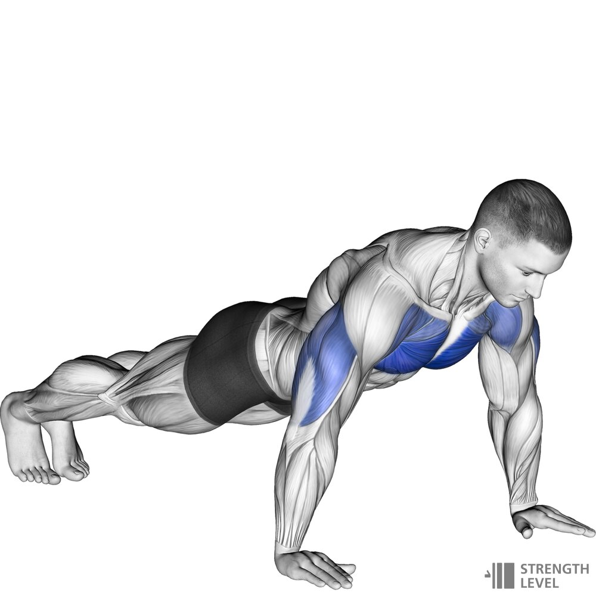
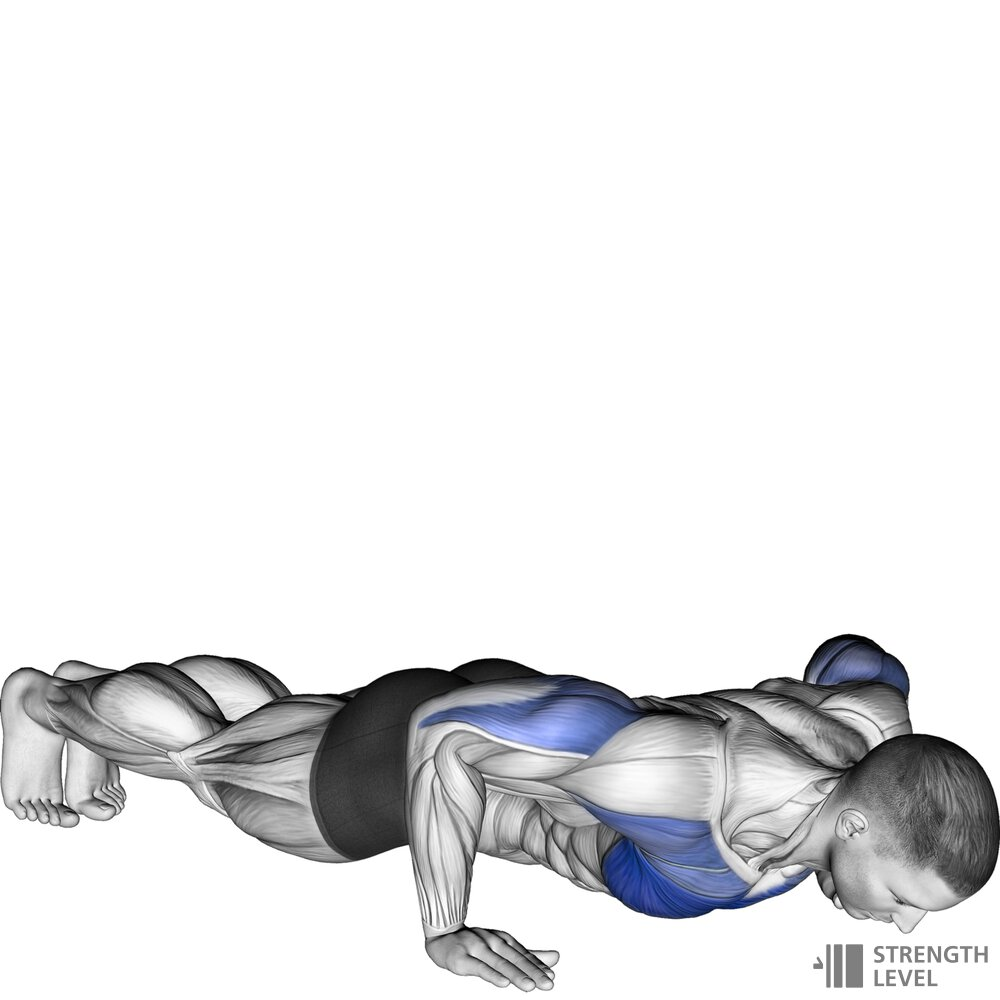
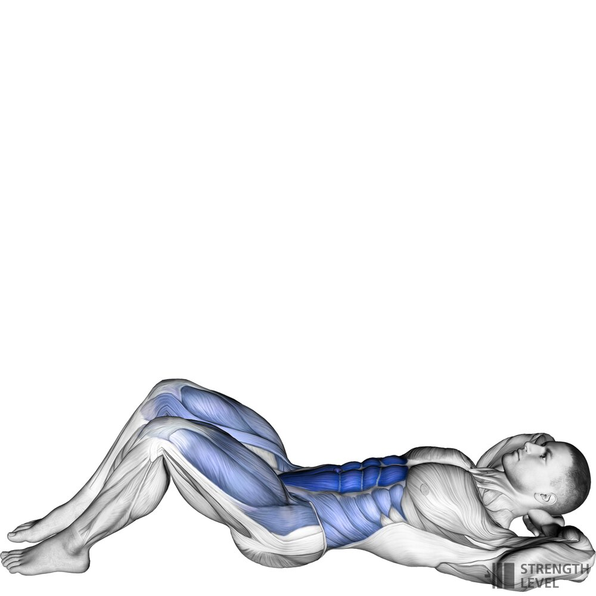
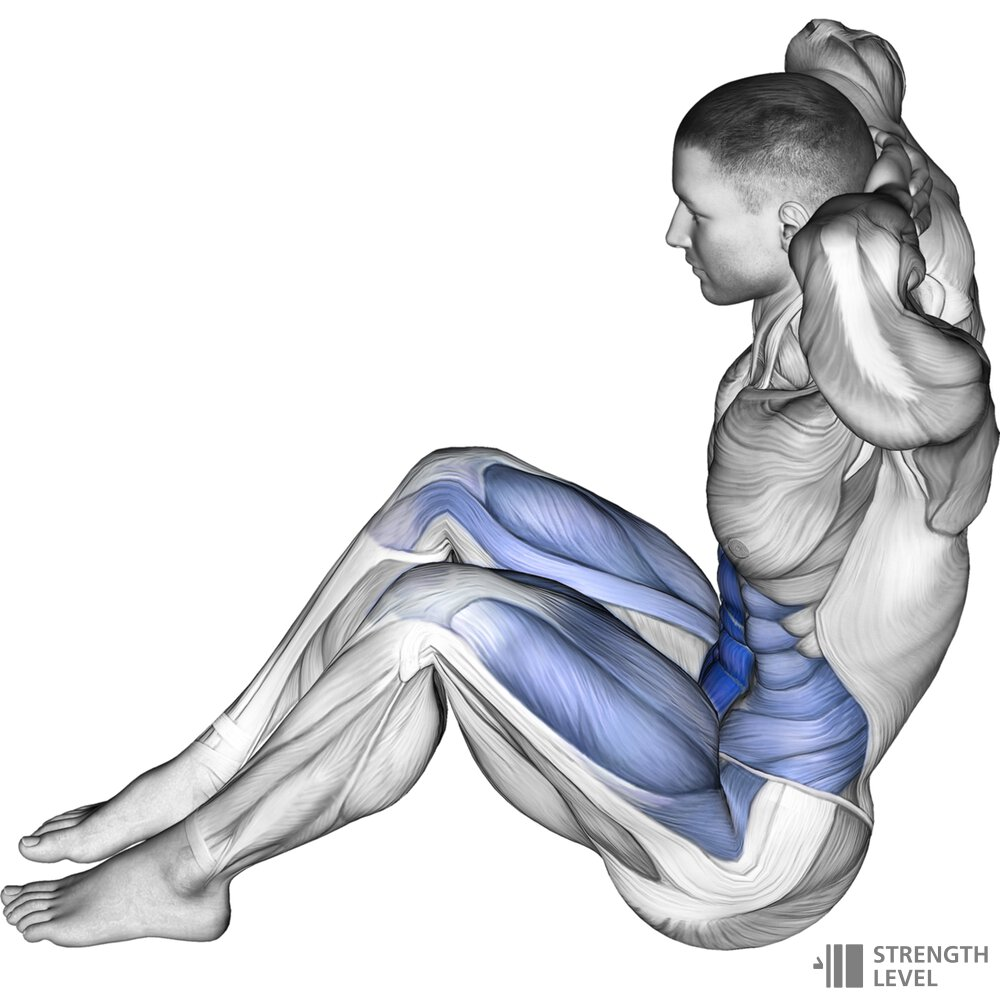
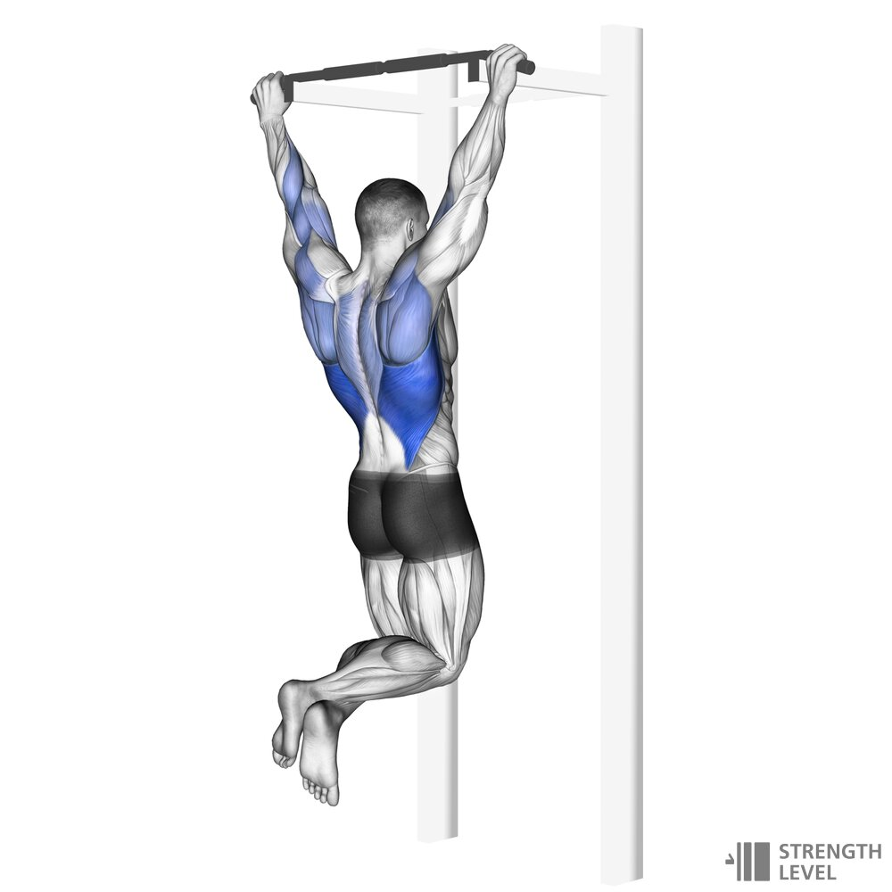
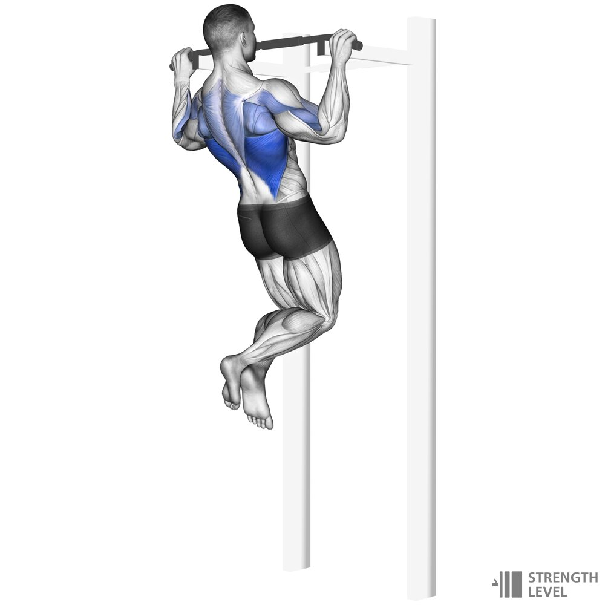
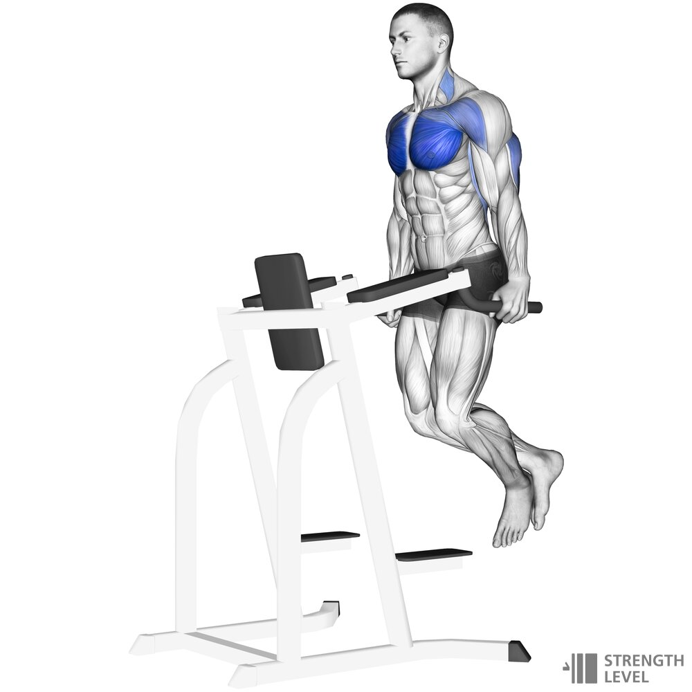
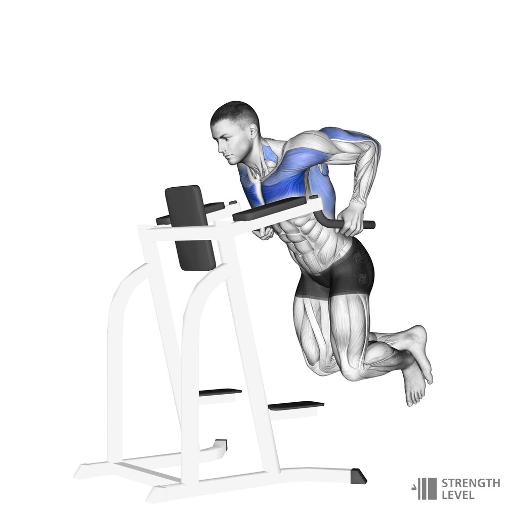

Ćwiczenia z ciężarem własnego ciała sprawdzają się zarówno u osób początkujących, jak i zaawansowanych. Jeżeli w ciągu dnia nie masz czasu na wyjście na siłownię, trening w domu to świetne rozwiązanie, pozwoli oszczędzić zarówno czas, jak i pieniądze.
1.Pompki
 
Główne mięśnie zaangażowane do pracy podczas wykonywania pompek to:
– mięśnie naramienne
– mięsień trójgłowy ramienia (triceps)
– cała grupa mięśni odpowiedzialnych za stabilizację
Dobrze wykonana pompka to pompka pełnozakresowa, podczas wykonywania
której ciało zatrzyma się
dosłownie milimetry przed podłożem.
Jest to oczywiście trudniejsze niż ruchy połowiczne,
lecz angażuje o wiele
więcej jednostek motorycznych, a na tym powinno nam
zależeć przede wszystkim,
gdy chcemy stymulować mięśnie do wzrostu.
Kończymy ruch, osiągając pełen wyprost w stawie łokciowym.
2.Brzuszki
 
Połóż się na plecach na czymś średnio miękkim – może być mata do ćwiczeń,
dywan, koc. Nogi ugnij w kolanach, stopy oprzyj o podłoże (całą podeszwą).
Dłonie umieść za głową, ale nie splataj ich. Rozszerz łokcie.
Wzrok skieruj przed siebie. Odcinek lędźwiowy
kręgosłupa „przyklej” do podłoża. Napnij brzuch.
To jest twoja pozycja wyjściowa.
Zrób wdech, a następnie na wydechu unieś łopatki kilka centymetrów nad ziemię.
W momencie maksymalnego spięcia mięśni brzucha zatrzymaj ruch na 1 sekundę,
po czym z wdechem opuść tułów do pozycji leżącej.
Analogicznie wykonuj każde kolejne powtórzenie.
Dla ułatwienia wyobraź sobie, że twoja klatka piersiowa,
ręce i głowa tworzą jedną płaszczyznę – unoś je razem,
jakby tworzyły nieruchomą całość. To pozwoli ci uniknąć podstawowych błędów.
Początkujący w czasie spięć mogą trzymać ręce na brzuchu,
aby poczuć pracę mięśni i upewnić się w ten sposób, że poprawnie robią brzuszki.
3.Podciągnięcia
 
Ćwiczenie to wzmacnia mięśnie grzbietu i poprawia naszą siłę.
Najlepiej wykonywać 2-3 serie tego ćwiczenia po 10-15 powtórzeń.
1.Weź wdech, ściągnij łopatki w tył i w dół bez uginania ramion.
2.Następnie zatrzymaj pozycję w skurczu izometrycznym przez określony czas.
3.Powolnym, kontrolowanym ruchem opuść ciało do pozycji początkowej.
4.Dipy
 
Wejdź do podporu na poręczach równoległych i uginaj
oraz prostuj ramiona w łokciach.
1.Barki idą do przodu, a nie łokcie do tyłu!
2.Ramiona pracują wąsko, a nie rozchodząc się na boki!
3.Pamiętaj o pracy łopatek!